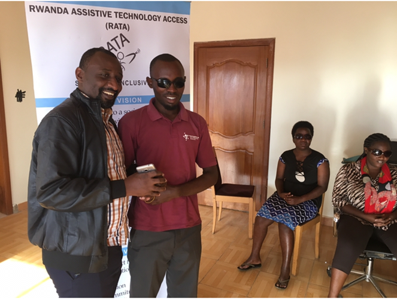
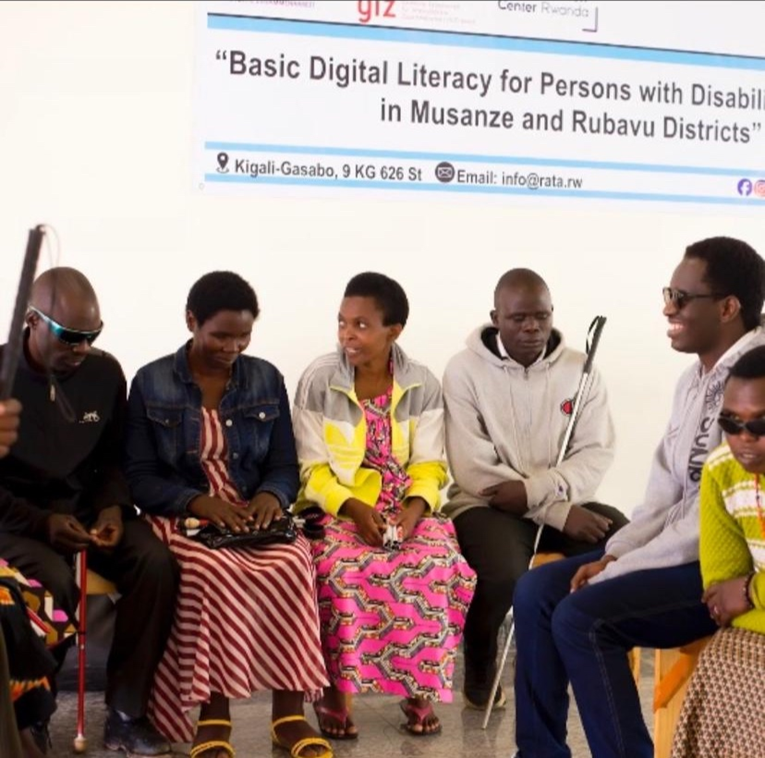
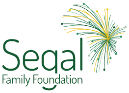
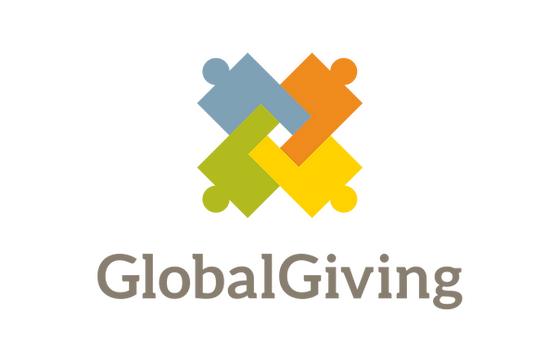

RATA often contributes to initiatives that advance
Assistive Technology in Rwanda.

Participants in our trainings are awarded and
introduced to potential employers.
What We Do
Our projects are designed to widen participation, increase educational and employment opportunities for people with disabilities
through the use of Assistive Technology.
Alongside with community workers in different areas of Rwanda,
RATA intervenes in 4 areas which are:
“Raising Awareness and Advocacy on the use and importance of Assistive technology,
Capacity development, Inclusive education and Innovation.”

Community Outreach and Public Awareness
RATA intervenes in this area as many people in Rwanda are not yet aware enough
of the importance of Assistive Technology in the lives of persons with disabilities.
Capacity Development and Facilitating Access to Assistive Technologies
Public and private institutions, schools, persons with disabilities,
their caretakers and parents should be equipped with skills and knowledge on Assistive Technology.
To enhance Inclusive education, Assistive Technology plays a great role as it provides special
educational needs software, switches, computer access communication aids for learners with disabilities.
This is the area where we believe Assistive Technology can make a great impact in improving the lives of
persons with disabilities. Local Assistive Technology tools need to be created.
Under our Inclusive Tech Lab, we have an inclusive educational platform for technology
designed for persons with disabilities and a resource centre for Assistive Technology.
Rwanda Assistive Technology Access (RATA) is a local non-governmental organization operating in Rwanda under the law No 552/RGB/NGO/LP/10/2019 founded on 4th January 2018 to foster Assistive technology in Rwanda after realizing that there’s a gap for Persons with disabilities in Rwanda, in accessing Assistive Technology.
RATA was respectively recommended and recognized by Rwanda Education Board (REB) on 5th May 2018 and by the National Council of Persons with Disabilities (NCPD) on 6th June 2018. Its headquarters is located at Remera-Gasabo, 9 KG 626 St.
Vision
RATA contributes to a society where persons with disabilities are able to study in order to live independently through the use of Assistive Technology.
Mission
The Mission of the Organization is to ensure accessible Assistive technologies for people with disabilities mainly in education and expanding access to these technologies.
Core Values
Dignity
Passion
Humility
Integrity
Compassion
Our Parteners
HVP Gatagara
German Corporation for International Cooperation

Segal Family Foundation

Global Limited
What People Say About RATA
As a resource room facilitator at University of Rwanda-Nyagatare Campus,I often faced challenges while facilitating students with
disabilities like how to make accessible documents, using braille displays, victor readers, braille embossers,...But after attending
RATA training on Assistive Technology, I am now able to overcome such challenges.


- Gerard Maniraguha
Read more